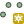
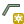
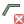
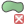

Editace vektorových dat¶
Vytvoření nové vektorové mapy¶
Novou vektorovou mapu vytvoříme z menu .
Obr. 129 Dialog pro vytvoření nové vektorové mapy.¶
Poznámka pro pokročilé
Klíč (key column) označuje v dialogovém okně název atributu,
který bude sloužit pro definovaní vazby mezi geometrickou a
atributovou částí popisu geoprvků, ve výchozím nastavení se jedná o
atribut cat, viz kapitola Atributová data.
Vytvoření prázdné vektorové mapy z příkazové řádky
v.edit map=novy_vektor tool=create
Vytvoření a úprava atributové tabulky¶
Nástroj pro editaci atributové tabulky otevřeme z nástrojové lišty
správce vrstev  Show attribute data for selected
vector map anebo z kontextového menu vektorové mapy Show
attribute data.
Show attribute data for selected
vector map anebo z kontextového menu vektorové mapy Show
attribute data.
Obr. 130 Spuštění správce atributových dat.¶
Přidávat či přejmenovávat atributy lze v záložce Manage tables, více v kapitole Editace atributových dat.
Obr. 131 Přidání nového atributu s názvem popis.¶
Editace vektorové mapy¶
Editaci vektorové mapy aktivujeme z nástrojové lišty správce vrstev
 Edit selected vector map anebo z kontextového menu
Start editing.
Edit selected vector map anebo z kontextového menu
Start editing.
Obr. 132 Spuštění editace vektorových dat z kontextového menu správce vrstev.¶
Nyní můžeme v mapovém okně zvolit nástroj kreslení bodu
 Digitize new point, linie
 Digitize new line anebo  Digitize new area a nakreslit požadovaný tvar.
Digitize new area a nakreslit požadovaný tvar.
{kind=link}
{kind=link}
Tip
Mapové okno bude zobrazovat podkladové mapy, které v něm byly načteny dříve.
Po ukončení editace geoprvku (pravým tlačítkem) se objeví formulář pro vyplnění atributů.
Obr. 133 Definice atributů pro nově vytvořený vektorový geoprvek.¶
Tip
Počáteční a koncové body (tzv. uzly) linií a hranic ploch budou na
sebe automaticky přichyceny. Výchozí hodnotu 10px je možné změnit
v nastavení  Digitization settings v sekci
General
Digitization settings v sekci
General Snapping threshold.
Uzly jsou vykresleny různou barvou, podle toho jsou-li přichyceny k dalšímu uzlu či nikoliv. Podobně jsou zvýrazněna i ostatní topologická primitiva jako linie, hraniční linie a centroidy, viz záložka Symbology.
Každá plocha Digitize new area
automaticky zaplochována centroidem. K centroidu lze později navázat
požadované atributy plochy. Hranice plochy a jejich centroidy lze také
editovat zvlášť.
Mazání vybraných prvků  Delete selected point(s), line(s), boundary(ies) or centroid(s)  Delete selected area(s) je potřeba vždy potvrdit pravým tlačítkem myši.
{kind=link}
{kind=link}
V nastavení editace můžeme nastavit zobrazení editovaných prvků (šířka, barvy), přichytávání, automatické přiřazování atributů novým prvkům a další.
Editaci ukončíme z nástrojové lišty anebo z kontextového
menu Stop editing.
Poznámka pro pokročilé
Editovat vektorové prvky lze v příkazové řádce pomocí modulu v.edit, což se může hodit především při skriptování.